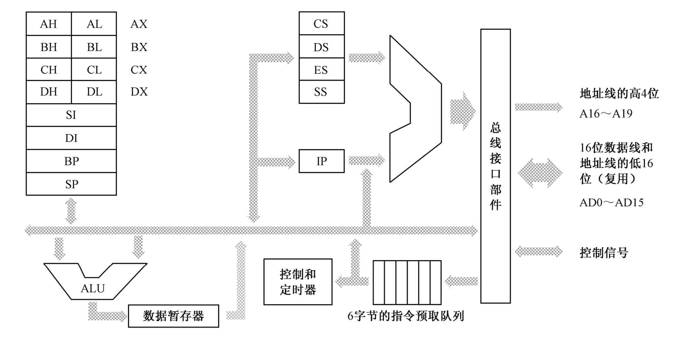
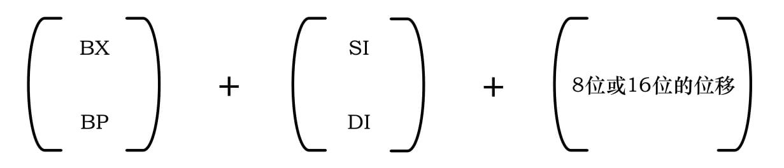
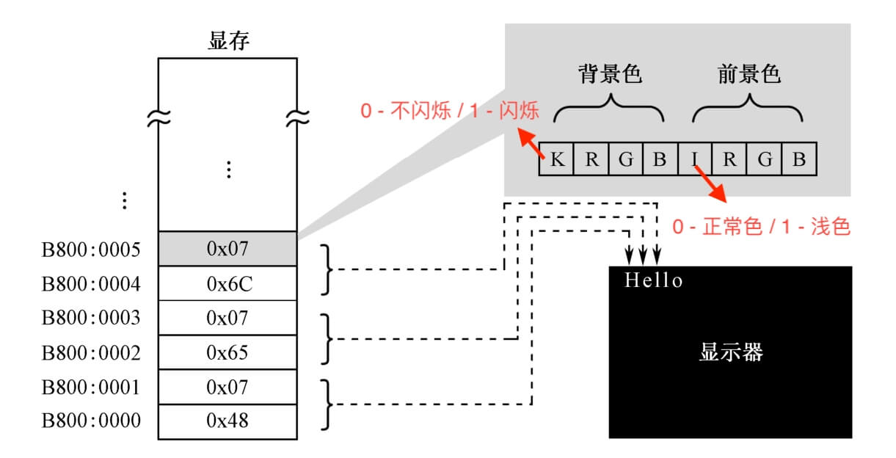
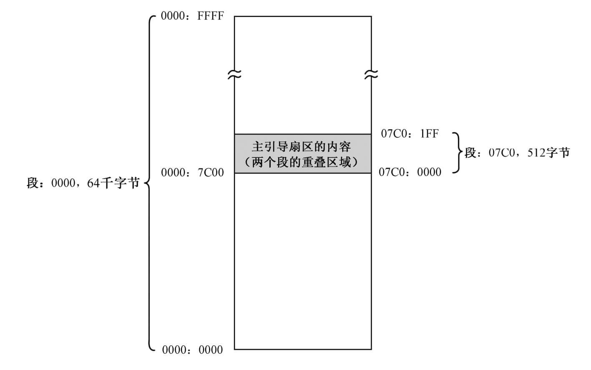
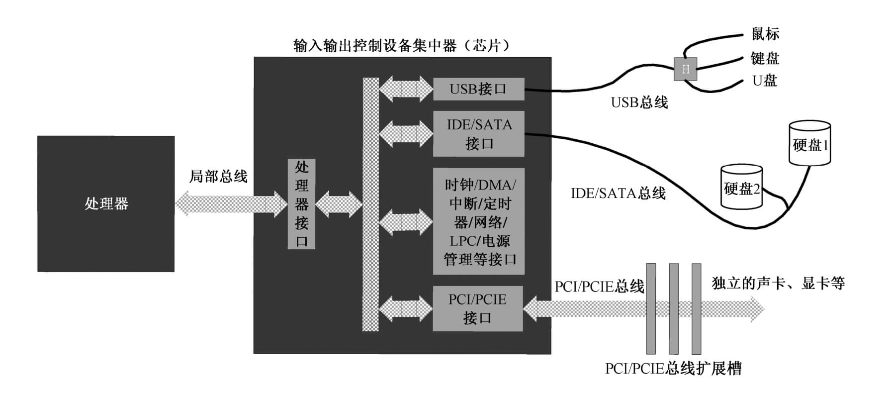
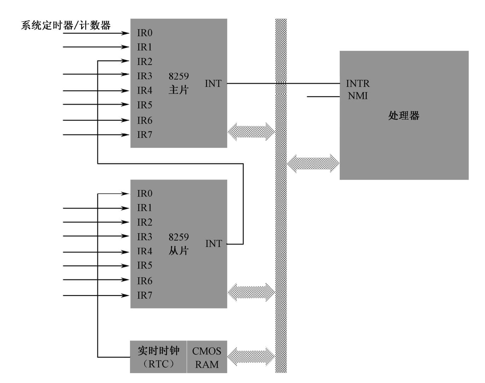
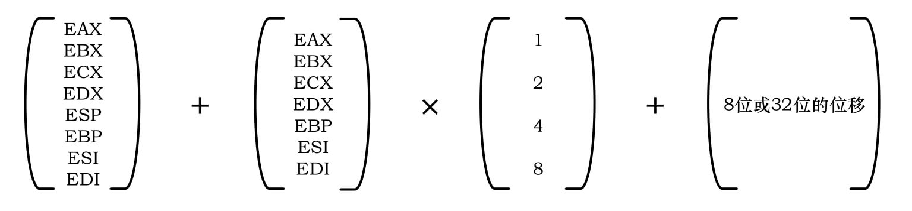

《x86 汇编语言：从实模式到保护模式（第二版）》读书笔记（第 1-11 章）
一本 2023 年的新书，很适合 x86 体系入门，这里挑些重点记一记。相关代码和注释参考这里。
第 1 章 - 十六进制计数法
（略）
第 2 章 - 计算机和汇编语言
- Intel 处理器的发展：4004（4 位）、8088（8 位）、8086（16 位）、80286、80386、80486、Pentium、…。
- 人们最早用的是开关、跳线以及纸带来给计算机编程。
第 3 章 - 分段机制和逻辑地址
- 处理器的字长：指寄存器和算术逻辑部件的数据宽度。
- 8086 处理器：

- 诞生于 1978 年；
- 访问内存时使用的是逻辑地址：“段地址”+“段内偏移”，指令中的地址均相对于某个段；
- 16 位 ip 寄存器；
- 4 个 16 位段寄存器：
- cs：指定代码段位置；
- ds：指定数据段位置；
- es：附加段，冗余的段寄存器；
- ss：栈段寄存器。
- 实模式下，栈空间最大为 64KB；
- 加电启动时状态：
- cs -> 0xffff；
- ip -> 0x0。
- 提供了 20 根地址线，可寻址 1MB 内存：
- 大部分用于访问 DRAM（0x0~0x9ffff），少部分用于访问 ROM-BIOS（0xf0000~0xfffff），和外围板卡（0xa0000\～0xeffff）。ROM 部分存有固化的开机启动代码（通常为跳转指令，将 cs/ip 跳回 ROM 的低地址区），通常也被称为 BIOS；
- 段只能起始于被 16 整除的物理内存地址（可以被表示）；
- 段逻辑地址（16 位） => 段物理地址（20 位） >> 4；
- 单个段最大 64KB（16 位）。

- 只能使用寄存器 bx、si、di、bp 来提供段内偏移地址，8086 中很多寄存器有特殊用途：
- bx（bh + bl）：基址寄存器（Base Address Register）；
- ax（ah + al）：累加器寄存器（Accumulator）：与它有关的指令还会做指令长度上的优化；
- cx（ch + cl）：计数器（Counter）；
- dx（dh + dl）：数据寄存器（Data）：专门用于和外部设备之间进行数据传送；
- si：源索引寄存器（Source Index）；
- di：目标寄存器（Destination Index）：用于数据传送操作。
- 固定数量的基址和变址组合：
- [bx + si]；
- [bx + di]；
- [bp + si]；
- [bp + di]。
- 寻址方式：
- 寄存器寻址；
- 立即数寻址；
- 内存寻址：指定偏移地址（有效地址）如何计算：
- 直接寻址：mov ax, [0x5c0f]；
- 基址寻址：mov [bx], dx；（当使用 bp 作为基址寄存器时，对应的段寄存器默认为 ss，bp 常用于栈内寻址）
- 变址寻址：mov [si], dx；（使用变址寄存器 si 和 di）
- 基址变址寻址：mov ax, [bx + si + 0x100]。
- 无条件转移指令：“16 位” 是指要转移到的目标位置的偏移地址是 16 位的。
- 相对短转移：段内转移，允许转移到距离当前指令 -128～127 字节的地方。指令必须使用关键字 “short”；
- 16 位相对近转移：段内转移，允许转移到距离当前指令 -32768～32767 字节的地方。指令必须使用关键字 “near”；
- 16 位间接绝对近转移：段内转移，目标地址通过 16 位通用寄存器或内存地址间接给出；
- 16 位直接绝对远转移：直接在指令中给出段地址和偏移地址的转移指令；
- 16 位间接绝对远转移：指令必须使用关键字 “far”。
第 4 章 - 汇编语言和汇编软件
- 汇编语言对指令的大小写没有特别的要求。
- NASM -> Netwide Assembler。
第 5 章 - 虚拟机的安装和使用
- 计算机的加电与复位：
- RESET 引脚：接受复位信号。复位后 CPU 会进行硬件初始化、BIST 内部自测试，并将内部所有寄存器的内容恢复到预置状态；
- 主引导扇区（MBR）：即 “0 盘面 0 磁道 1 扇区”。BIOS 会将该扇区内容加载到内存地址 0x0000:0x7c00 的位置（来自 Intel 第一代个人电脑芯片 8088，后续 CPU 为了保持兼容，一直使用这个地址），然后跳转到该位置执行。该扇区大小通常为 512 字节。
- 硬盘的访问模式：
- CHS（Cylinder-head-sector）模式：通过磁柱，磁头，扇区寻址；
- LBA（Logical Block Address）模式：物理扇区被组织成逻辑扇区，逻辑扇区号连续递增。
- 一个简单的启动程序：
mov ax, 0xb800
; x86 下的段寄存器只能间接赋值；
mov ds, ax
; ds 会作为默认的数据段寄存器，也可以显式使用 es；
mov byte [0x00], 'a'
mov byte [0x02], 's'
mov byte [0x04], 'm'
jmp $ ; 死循环；
times 510-($-$$) db 0
db 0x55, 0xaa
第 6 章 - 编写主引导扇区代码
- 一个有效的主引导扇区，其最后 2 字节应当是 0x55 和 0xaa。正常情况下，一段精心编写的主引导扇区代码将检测用来启动计算机的操作系统，并计算出它所在的硬盘位置。然后，它把操作系统的自举代码加载到内存，也用
jmp指令跳转到那里继续执行，直到操作系统完全启动。 - 显卡有自己的存储器（VRAM），要显示的内容都预先写入显存。
- 两种基本模式：
- 文本模式：用于显示字符的工作方式（字符代码存入显存，由字符发生器和控制电路决定如何渲染）；
- 图形模式：用于显示图形的工作方式。
- 由于历史的原因，所有在个人计算机上使用的显卡，在加电自检之后都会把自己初始化为 80×25 文本模式。在这种模式下，屏幕上可以显示 25 行，每行 80 个字符，每屏总共 2000 个字符；
- 0xb8000～0xbffff（段起始 0xb800）这段 32KB 物理地址空间，通常默认被用来映射显存；
- 屏幕上的每个字符对应着显存中连续 2 字节，前一个是字符的 ASCII 代码，后面是字符的显示属性。

- 光标寄存器：0xe（高 8 位）、0xf（低 8 位），可读可写，合起来形成一个 16 位数值，控制光标在屏幕上的位置。
- 端口 0x3d4（索引寄存器）存储要访问的寄存器索引值；
- 端口 0x3d5 用于数据读写。
- Nasm 伪指令（不对应处理器指令，由编译器处理）：db、dw、dd、dq。
- 对于寄存器清零，使用 xor 指令生成的机器码更短：
mov rax, 0
xor rax, rax ; better!
- 段内近转移：
infi: jmp near infi
- near 关键字表示代码转移位置在当前段内，相对量为 16 位；
- 取指令的位置：CS << 4 + IP；
jmp指令的几种形式：- 绝对地址跳转 -> jmp 0x5000:0xf0c0；
- 相对偏移地址跳转（目标位置相对当前指令的偏移量）-> jmp near infi。
- Nasm 伪指令：
- 重复指令：
times 20 mov ax, bx； - 当前指令行的位置：
$； - 当前汇编段的起始位置：
$$； - 当前位置已经过的段大小：
$ - $$； - 保留指定数量字节，但不初始化值：
resb 256、resw 100、resd 50； - 定义常数：
app_start equ 100。
- Bochs：开源的 x86 PC 模拟器。用软件来模拟处理器取指令和执行指令的过程，以及整个计算机硬件。
- 可用于调试 MBR 程序；
- 现代处理器加电时的状态：
- cs -> 0xf000；
- ip -> 0xfff0；
- 其余高地址线 -> 高电平：处理器设计者希望把 ROM-BIOS 放到 4GB 可寻址内存的最高端，这样，4GB 以下连同低端 1MB 都是连续的 RAM 区，可以为操作系统管理内存带来方便。
- 常用命令：
- s：step；
- n：next；
- c：continue；
- u/N：反编译接下来的 N 条指令；
- print-stack N：查看栈（ss:sp）内容；
- info eflags：查看 flags 寄存器状态，大写为置位；
- sreg：查看段寄存器内容；
- creg：查看控制寄存器内容；
- *page [m]*：查看线性地址到物理地址的映射信息；
- info tss：查看当前任务（TR）的 TSS 内容；
- info ldt：查看当前任务（LDTR）的 LDT 内容；
- info gdt：查看 GDT 的内容；
- info tab：查看当前页表的内容。
- 在 32 位和 64 位处理器中，段寄存器 cs、ss、ds、es、fs 和 gs 均为 16 位，除此之外还额外增加了一个不可访问的部分，叫作“段描述符高速缓存器”。该部分由 CPU 内部使用，其中存放了段的起始地址、扩展范围以及各种属性。
第 7 章 - 相同的功能，不同的代码
- 汇编语言源程序的编译符合一种假设，即编译后的代码将从某个内存段中偏移地址为 0 的地方开始加载。

- 逻辑地址 0x0000:0x7c00 与 0x07c0:0x0000 指向同一个物理地址；
- 基于段寄存器的数据访问“分段”是 CPU 的特性之一。
- 对 CPU 来说，加减法不区分操作数的符号性（通常没有减法运算电路），乘除法区分操作数的符号性。对于参与乘除法的操作数，需要正确使用零扩展和符号扩展来改变其长度。
第 8 章 - 比高斯更快的计算
- 栈对应的内存段（栈段）由段寄存器 ss 指向，sp 寄存器指向下一个数据压入栈的位置（栈顶）。
push ax
push word [label] ; sp => sp - 2.
pop ax
pop word [label]
push指令使得 sp 向低地址方向增长，数据压入地址：ss << 4 + sp，pop类似；push与pop指令的操作数宽度只能为 2、4 或 8 个字节。
第 9 章 - 硬盘和显卡的访问与控制
- Nasm 定义段：
section .code align=16 vstart=0
- 段用于分隔程序中的不同内容；
- 汇编指令 “section” 或者 “segment” 用于定义段；
- 汇编指令 “section.<段名称>.start” 用于引用段地址（相对于文件开头的偏移量）；
- 参数 “vstart”（Virtual Start Address）控制段内标号的汇编地址计算方式。定义时，地址为段内的偏移距离加上该参数的值；
- Intel 处理器要求段在内存中的起始物理地址最低于 16 字节对齐（通过 align 参数）；
- 段起始位置在汇编时确定，根据对齐方式和段大小从低地址到高地址自动选择。
- 程序头部的基本信息：
- 程序尺寸，以字节为单位的大小；
- 程序入口点，包括段地址和（段内）偏移地址；
- 段重定位表：程序加载到内存后，对引用到的地址进行重定位。
- 加载器的工作流程：
- 初始化栈段（ss、sp）；
- 载入程序的物理加载地址；
- 初始化段寄存器（ds、es）；
- 从硬盘特定 LBA 读取程序头，获知程序大小；
- 继续读取完整的应用信息到内存；
- 依次对程序头部重定位表中的条目进行重定位（根据物理加载地址更新符号引用地址）；
- 更新 ss、sp、cs、ds（栈段、代码段、数据段）指向程序主体；
- 跳转到程序入口执行。
- 计算机内部总线系统：

- 输出控制设备集中器（ICH）：连接不同总线，协调各个 I/O 接口对处理器的访问。即“南桥”；
- 每种相似类型的设备都有各自的总线体系，对应不同的线路复用和仲裁方式（USB 总线、IDE/SATA 总线等）；
- I/O 端口和端口访问：
- 端口本质上是一些位于 I/O 接口电路中的寄存器，对应不同功能；
- 端口实现方式：
- 映射到指定物理内存段；
- 独立编址：通过引脚 M/IO# 来控制某一时刻是内存生效还是 I/O 端口生效。
- 访问端口：
in、out。
- 访问硬盘：
- 读写以“扇区”单位；
- 逻辑扇区编址方法采用 LBA48，采用 48 位比特表示逻辑扇区号；
- 8 个命令块端口：
- 0x1f0：Data Port；
- 0x1f1：Error；
- 0x1f2：Sector Count；
- 0x1f3：LBA low byte (Logical Block Address)；
- 0x1f4：LBA mid byte；
- 0x1f5：LBA hi byte；
- 0x1f6：1B1D TOP4LBA: B=LBA, D=drive；
- 0x1f7：Command/status。
- 四种常见的
call指令调用方式：
- 段内：用
ret返回，直接从栈中恢复 IP 寄存器的值；- 相对近调用：call label；
- 间接绝对近调用：call cx。
- 跨段：用
retf返回，从栈中同时恢复 IP 和 cs 寄存器的值；- 直接绝对远调用：call 0x2000:0x0030；
- 间接绝对远调用：*call far [bx]*。
第 10 章 - 中断和动态时钟显示
- 外部硬件中断：
- 由外围硬件设备发出的中断信号引发的，以请求处理器提供服务；
- Intel 处理器上对应的两个引脚：
- NMI（Non Maskable Interrupt）：必须加以处理的严重中断信号（非屏蔽中断）；
- INTR：不紧急，不着急处理的中断信号（可屏蔽中断）。
- Intel 处理器规定，NMI 中断信号由 0 跳变到 1 后，至少要维持 4 个以上的时钟周期才算是有效的，才能被识别；
- 实模式下，NMI 中断使用统一的中断号 2，而不进行细分；

- 8259 可编程中断控制器：每片八个引脚，两片级联使用（主从关系）可提供 15 个中断号；
- 内部包含一个中断屏蔽寄存器（IMR），控制来自各个引脚的中断信号是否能够通过 8259 送往 CPU；
- 中断优先级：IR0 引脚优先级最高，IR7 引脚优先级最低。计算机启动之后，主片的中断向量为 0x08～0x0F；从片的中断向量是 0x70～0x77；
- 主片端口号：0x20、0x21；从片端口号：0xa0、0xa1；
- 中断处理程序结束前需要更新中断服务寄存器（ISR）的对应状态，即发送中断结束命令（EOI），值 0x20。
- CPU 标志寄存器中的 IF 标志位控制其是否响应 INTR 中断（0 - 忽略；1 - 响应）；
- 中断向量表（IVT）：存放中断处理程序的入口地址；
- 建立和初始化工作由 BIOS 在计算机启动时完成。默认情况下，所有中断处理程序均指向同一个入口地址（仅包含一条返回指令）。后续该部分内容由操作系统负责初始化；
- 实模式下，位于物理地址 0x00000~0x003ff（低端 1KB）；
- 每个中断在 IVT 中占 2 个字（处理程序的逻辑段地址+偏移地址）。
- CPU 处理中断流程：
- 保护断点现场。FLAGS 压栈；清除 IF、TF 位；cs、ip 值压栈；
- 执行中断处理程序。终端号 x 4 => 中断入口点偏移；取出段地址和偏移地址，更新 cs、ip；
- 返回到断点处继续执行。通过
iret指令返回中断；从栈中恢复 cs、ip、FLAGS，继续执行主程序。
- 当 CPU 执行任何一条改变栈段寄存器 ss 的指令时，它会在这条指令和下一条指令执行完期间禁止中断（ss 与 sp 应该先后被一起修改）。
- 实时时钟、CMOS RAM、BCD 编码：
- 实时时钟电路（RTC）芯片由一个石英晶体振荡器（晶振）驱动，经分频后用于对静态存储器（CMOS RAM）进行每秒一次的时间刷新；
- 时基选择：振荡器的频率可以选择：4.194304 MHz、1.048576MHz 和 32.768kHz（默认）；
- 分频器选择：将振荡器频率转换为较低频率。
- RTC 芯片也可以提供闹钟和周期性的中断功能：接入 8259 从片 IR0 引脚，默认中断号 0x70，需再配合 CMOS RAM 上的寄存器 C 来识别以下具体中断类型；
- 周期性中断：由时基频率 + 分频器频率决定；
- 更新周期结束中断：每次时间和日期更新完毕时触发；
- 闹钟中断：实时时钟到达指定闹点时触发。
- RTC 芯片端口 0x70 的最高位（bit 7）控制着 NMI 中断的可用性（0 - 开；1 - 关）；
- CMOS RAM 中保存的日期和时间信息通常以 BCD 码形式编码；
- CMOS RAM 中除时间日期信息外，还保存有整机的配置信息（硬件类型、开机密码，以及辅助存储设备启动顺序等）；
- CMOS RAM 大小一般为 256 字节（包含扩展部分）；
- CMOS RAM 内的四个寄存器：
- 寄存器 A：控制时基选择和周期性中断发生的速率；
- 寄存器 B：各类“开关”位（周期性中断、闹钟中断、更新结束中断等）、数据模式、格式、夏令时支持等；
- 寄存器 C：只读。标志寄存器，反映了发生中断的类型，读操作后对应位自动置 0；
- 寄存器 D：另一个标志寄存器。
- 内部中断（异常）：
- 发生在处理器内部，是在执行指令的过程中出现了问题或者故障引起的。如：“除零中断”、“结果溢出中断”、“非法指令中断”。
- 一般可分为三种类型：
- 指令执行异常：处理器在执行指令的过程中，检测到了程序中的错误，并由此而引发的异常；
- 程序调试异常：为调试程序而特意准备，通常由
into、int3和bound等指令主动发起； - 机器检查异常：处理器型号相关，用于检测和报告与硬件有关的总线错误、奇偶校验错误、高速缓存错误等。
- NMI、内部中断、和指令引起的软件中断不受 IF 标志位的影响，也不需要中断识别总线周期，中断类型是固定的，可立即转入相应的处理程序；
- 根据异常情况的性质和严重性，异常又分为以下三种，并分别实施不同的处理：
- 故障（Faults）。通常是可以纠正的，比如“缺页异常”；
- 陷阱（Traps）。通常用于调试目的，在执行了截获陷阱条件的指令之后立即产生（如果条件成立）；
- 终止（Aborts）。标志着最严重的错误。
- 软中断：
- 使用指令产生的中断。不需要识别总线周期，中断号在指令中给出；
int3：断点中断指令，机器指令 0xcc。常用于单步调试；int [imm8]：执行给定中断号 imm8 对应的处理程序；into：溢出中断指令，当标志位 OF = 1 时产生中断。
- 操作系统调用采用唯一的中断号，配合通过寄存器传递的系统调用号，通过查询系统调用表来找到需要执行的代码入口；
- BIOS 中断：在计算机执行引导扇区之前，方便地使用基本硬件访问功能；
- 寄存器 ah 存放具体功能编号（针对不同中断号）。如 mov ah, 0; int 0x16，访问键盘服务；
- 每个外部设备接口都有自己的 ROM，存放有自己功能的调用例程和设备初始化代码。按照规范，前两个单元的内容是 0x55 和 0xAA，第三个单元是本 ROM 中以 512 字节为单位的代码长度；从第四个单元开始，是实际的 ROM 代码。BIOS 会在计算机启动期间，以 2KB 为单位搜索内存地址 C0000～E0000 之间的区域，当发现某个区域的头两个字节是 0x55 和 0xAA 时，那意味着该区域有 ROM 代码存在。接着，通过累加和检查和验证，进入实际 ROM 代码执行。这些代码会初始化外部设备的相关寄存器和工作状态，填写相关的中断向量表，使它们指向自带的中断处理程序。
第 11 章 - 32 位 x86 处理器编程架构
- IA-32：Intel 32 位处理器架构。
- 发展于 1978 年的 8086 处理器；
- 32 根数据线，以及至少 32 根地址线。可访问至少 4GB 内存，每次可连续读写 4 字节（双字）数据；
- 32 位通用目的寄存器：eax \ ebx \ ecx \ edx \ esi \ edi \ esp \ ebp；
- 高 16 位部分不可独立使用；
- 源操作数与目的操作数必须具有相同长度。
- 32 位标志寄存器 eflags，32 位指令指针寄存器 eip；
- 仍基于分段模型，段基地址 32 位，段内偏移量 32 位。16 位段寄存器 cs \ ss \ ds \ es \ fs \ gs 中存放段选择子，即要访问的段（段选择器）。真正的段基地址存放在对应的描述符高速缓存中；
- 支持使用平坦模型（Flat Mode），即只分一个段，段基址为 0x00000000；
- 处理器要求在加载程序时，先定义该程序所拥有的段，然后才允许使用这些段。定义段时，除基地址（起始地址）外，还附加了段界限、特权级别、类型等属性。当程序访问一个段时，处理器将进行检查，以防止对内存的违规访问；
- 提供了 V86（虚拟 8086）模式，在这种模式下，IA-32 处理器被模拟成多个 8086 处理器并行工作（支持同时运行 32 保护模式和 8086 实模式程序）；
- 逻辑地址 = 偏移地址（有效地址，EA）+ 段地址；
- 分页机制：页大小一般 4KB。每个任务对应 4GB 虚拟线性地址空间，并使用线性地址描述，MMU 负责将该地址转换为物理地址；

- 内存寻址方式（如上图）：在 32 位处理器上，允许在内存操作数中使用栈指针寄存器 esp。
- 现代处理器的结构和特点：
- 流水线：把一条指令的执行过程分解成若干个细小的步骤，并分配给相应的单元来完成。各个单元的执行是独立的、并行的。如此一来，各个步骤的执行在时间上就会重叠起来；
- 高速缓存：利用程序的局部性原理（时间 + 空间），缓存经常使用的数据；
- 乱序执行：将指令拆分为“微指令”后，以乱序方式执行它们，某种程度可以提高效率；
mov eax, [mem1]
; 拆分为两个微操作，esp 的值可以提前被修改（不需要等待 eax）；
push eax
; esp 值更新后，该指令可以提前执行；
call func
- 寄存器重命名：处理器重命名临时寄存器以代表目标逻辑寄存器，借此优化代码的执行顺序；
mov eax, [mem1]
shl eax, 3
mov [mem2], eax
; 以下三条指令将在内部使用不同的临时寄存器并行执行；
mov eax, [mem3]
add eax, 2
mov [mem4], eax
; 代码执行完毕前会将临时寄存器的值更新到真实寄存器中；
- 分支目标预测：预测条件分支的后续执行路径，减少流水线指令清空带来的惩罚。
评论 | Comments